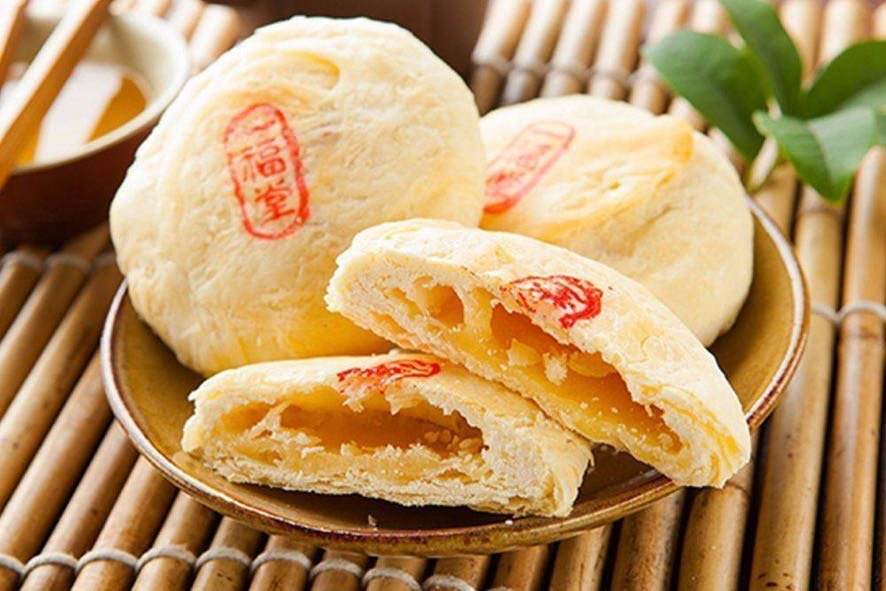

王彥灃
年齡：20 歲
科系：綠色能源與資訊科技學系 Department of Green Energy and Information Technology
聯絡信箱：wyfoscar@gmail.com
關於我
我來自台中市，這裡是慶記之都。我目前就讀國立台東大學綠能與資訊科技學系，希望未來能從事半導體產業或機械相關工作。在求學過程中，我曾擔任班級幹部（班代），學習如何與人溝通及管理時間（找別人做事）。透過參與課外活動，我提升了團隊合作能力，也更懂得如何與不同背景的人相處。
興趣與專長
我喜歡打桌球，那能使我專注而且解壓，並且是一個很好的運動，能讓我流流汗，變得更健康。我也喜歡美食，吃美食讓我感到心情愉悅，有一個好心情才能有更多勇氣對待明天。
學習動機與目標
- 找工作更有優勢: 學會前後端設計等於多一條職涯道路。
- 自己動手做副業或接案: 可以打造自己的網站、接案賺錢。
- 思考邏輯會變更清楚: 寫程式訓練有條理的思考方式。
- 學會一技之長: 可應用於跨平台網站、API、雲端應用等。
- 能把想法變成實體: 實現靈感、提升成就感。
- 接軌未來科技: 為 AI、區塊鏈、IoT 等新趨勢打下基礎。
我的家鄉推薦景點（台中）
-
國家歌劇院： 由伊東豊雄設計，是結構與聲學的奇蹟。
-
 審計新村： 老宿舍改建的文創聚落，適合拍照與探索，缺點是人多又超無聊。
審計新村： 老宿舍改建的文創聚落，適合拍照與探索，缺點是人多又超無聊。 -
草悟道： 城市綠廊，沿線有書店、表演空間，無聊＋1。
-
大坑登山步道： 登高望遠，適合健行與賞景，無聊＋2。
-
高美濕地： 招潮蟹、夕陽與風車，風景迷人。
-
逢甲夜市： 全台最熱鬧夜市之一，小吃種類豐富，旁邊的麻將館一小時才75好評。
-
 第二市場： 聚集各式古早味美食，如王記菜頭粿。
第二市場： 聚集各式古早味美食，如王記菜頭粿。 -
豐原廟東夜市： 米糕、鳳梨冰、蚵仔煎等人氣小吃，最推薦小肉圓，偏貴但總體來說很不錯。
-
一中街： 匯集各式各樣的店的一條街。
必吃美食推薦
-

太陽餅： 酥香中帶有麥芽甜味的台中名產。
-
台中肉圓： 肉圓普通，但冬粉湯超好喝。
-
一中豐仁冰： 好吃的冰，cp值超高。
-
宮原眼科： 外觀像魔法學院，甜點與冰淇淋很有特色。
-
屋馬燒肉： 應該算是台中最有名的燒肉店，貴就完事了，還行但沒誰麼記憶點，但雞湯喝到飽。
-
台灣陳沙茶火鍋： 私人推薦，好吃但沒什麼人知道。
-
繼光香香雞： 1973年成立於台中市，其名來自台中市中區繼光街。